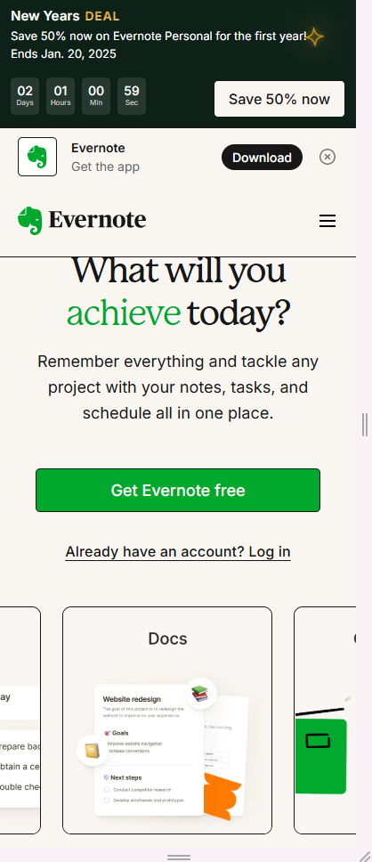

Visual Hierarchy
Apple
apple.comApple has a great example of visual hierarchy in their website design. The graphic and text at the top of the page are large and catch the eye. There is only the graphic of the phone and the three large letters behind it which is great use of whitespace. It has some text below which draws the eye down the page.
Rule of Thirds
Asana
asana.com Asana has three main sections at the top of their homepage which demonstrates the rule of thirds. The top third has their logo and a button to 'get started', as well as a drop down menu. The middle sestion has a large heading that draws your eye and keeps you moving down the page. Below that they have a section that states how many companies choose them with a scrolling list.
White Space and Clean Design
Medium
medium.comMedium has a great website that illustrates good use of white space and a clean design. Their logo is at the top with a button. But your eye is drawn to a large heading with some text below and a button that encourages you to 'start reading'. The background is white with black text and a green button. There is very little on the page which simplifies the design and gives it a clean, organized feel.